REM — інструкція користувача
Як орієнтуватися у 3D-підстанції, працювати з панелями та схемами, проходити навчальні процедури й користуватися віртуальними приладами.
Про симулятор
REM відтворює двотрансформаторну підстанцію 10/0,4 кВ. У програмі можна оглядати обладнання ззовні й усередині приміщень, виконувати доступні перемикання, спостерігати за показниками та сигналізацією, користуватися схемами й проходити навчальні процедури.
Інструкція пояснює керування програмою та доступні можливості симулятора. Послідовність дій у навчальній процедурі задає її плеєр; посібник не замінює програму робіт на реальному об’єкті.
Робота починається у відкритій сторінці симулятора. Усі назви кнопок нижче наведено для українського інтерфейсу.
Ознайомтеся з клавішами, виберіть потрібну точку огляду, а потім відкрийте пульт диспетчера або «Навчання». Для роботи з ORION перейдіть до розділу 5.
Початок роботи та навігація
1.1. Початковий екран
- Під час першого відкриття виберіть «Українська» на екрані «Оберіть мову». Кнопка «Пропустити» також продовжує запуск українською.
- Дочекайтеся завантаження сцени й визначення якості графіки.
- На екрані «Якість графіки» прочитайте вибраний рівень і натисніть «ОК».
- Почніть огляд території або виберіть потрібну точку в нижньому списку.
Після завершеного першого запуску ці екрани можуть більше не з’являтися. Мову можна змінити в налаштуваннях; її зміна перезавантажує сторінку. Незавершене вимірювання приладом після відновлення може потребувати повторення.
Розташування основних елементів показано на рис. 1.
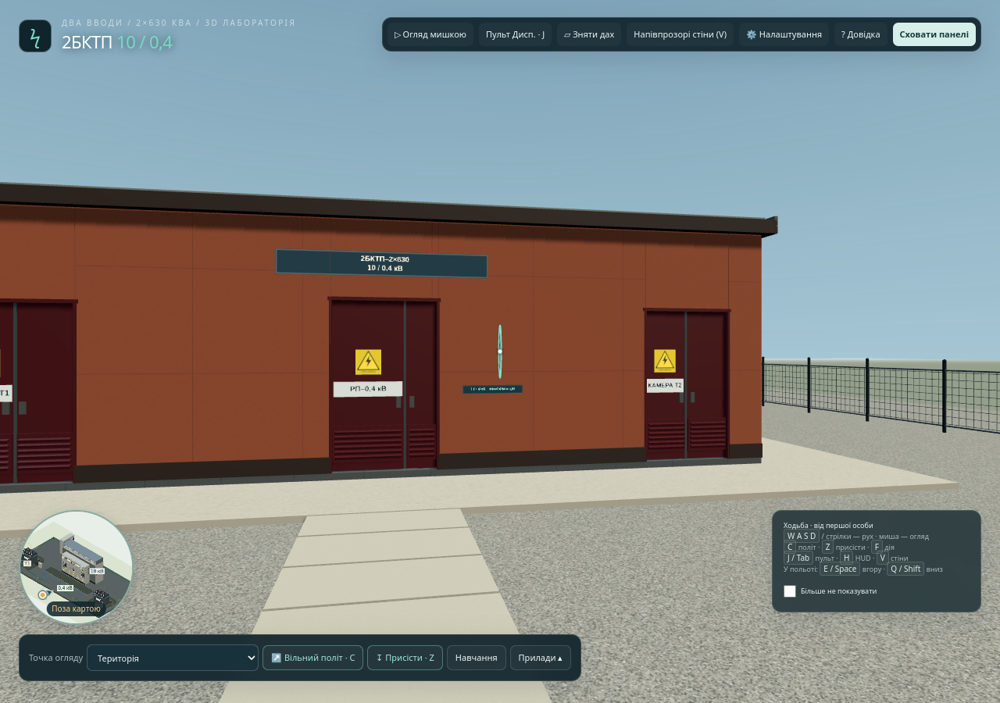
1.2. Клавіші й огляд мишкою
Натисніть «Огляд мишкою», щоб увімкнути огляд. Рух миші повертає камеру. Наведіть центр огляду на потрібний орган керування й натисніть ліву кнопку миші або F. Якщо трохи затримати наведення, з’явиться підказка з назвою та призначенням елемента.
Клацання у вільній області сцени також активує огляд. Окремі елементи, зокрема WEGA та настінні матеріали, можуть реагувати на перше натискання одразу. Для переходу до кнопок панелей звільніть курсор клавішею Esc.
| Клавіша | Дія | Примітка |
|---|---|---|
| W / ↑, S / ↓ | Рух уперед / назад | У напрямку огляду; у звичайному режимі — по підлозі або території. |
| A / ←, D / → | Рух ліворуч / праворуч | Бічне переміщення. |
| F | Взаємодія | З елементом у центрі огляду. |
| Esc | Звільнити огляд або закрити активне вікно | Якщо відкрито панель чи діалог, спочатку закривається відповідний елемент. За потреби натисніть ще раз. |
| C | Змінити режим пересування | Звичайний рух ↔ вільний політ. |
| Z | Присісти / підвестися | У звичайному режимі пересування. |
| E / Space | Піднятися | У режимі польоту. |
| Q / Shift | Опуститися | У режимі польоту. |
| J / Tab | Відкрити / сховати пульт диспетчера | Коли фокус не перебуває у полі або активному діалозі. |
| R | Зняти / повернути дах | Для огляду розміщення обладнання. |
| V | Змінити прозорість стін | Режим огляду внутрішнього компонування. |
| H | Сховати / показати панелі | Також доступні екранні кнопки. |
Літерні клавіші відповідають фізичним позиціям клавіатури, тому перемикати українську розкладку на англійську не потрібно. Під час введення у поля, роботи з діалогами й деякими панелями клавіші руху не керують сценою. Щоб повернутися до переміщення, закрийте відповідну панель та активуйте огляд.
Політ та напівпрозорі стіни зручні для демонстрації компонування. Для підключення ORION, дій із кришкою WEGA та перевірки її дисплея поверніться до звичайного режиму, вимкніть напівпрозорі стіни й підійдіть до фасаду комірки.
1.3. Швидкий перехід і мінікарта
У нижній панелі відкрийте список «Точка огляду» та виберіть місце. Доступні територія, входи до приміщень, КСО Т1/Т2, трансформатори Т1/Т2, РП–0,4 кВ / АВР, прилади вводу, АСКОЕ та огляд згори. Вибір точки зберігає поточний режим пересування. Для огляду з висоти спочатку ввімкніть «Вільний політ», а потім виберіть «Згори».
Для входу до приміщення відкрийте його двері натисканням у сцені. Якщо двері зупинилися під час руху, відійдіть від траєкторії їх відкривання.
Мінікарта показує ваше положення та напрямок огляду. Вона призначена для орієнтування; натискання на неї не переміщує користувача. У польоті та під час роботи з деякими панелями мінікарта приховується автоматично. Список точок і мінікарту показано на рис. 2.
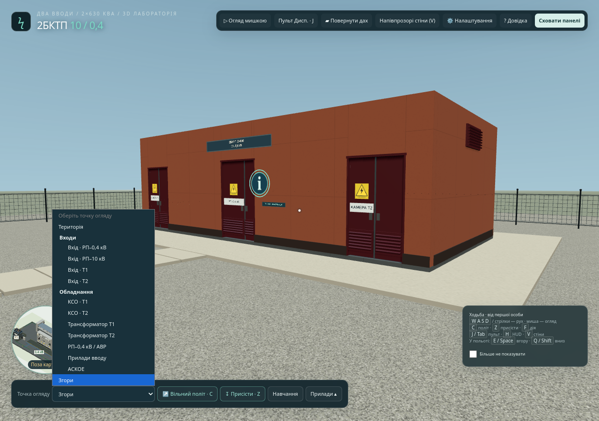
1.4. Телефон і планшет
Для руху використовуйте екранний джойстик: відхилення вперед/назад переміщує користувача, бічне відхилення повертає його. Для огляду проведіть пальцем по вільній області сцени. Коротке торкання інтерактивного елемента виконує доступну дію.
Точки огляду, режим пересування та присідання доступні в нижній панелі. У польоті з’являються окремі кнопки підйому й опускання: утримуйте потрібну кнопку для руху по висоті. Відкриті панелі можуть закривати або приховувати сенсорне керування сценою. Для повернення до руху закрийте панель.
На вузькому екрані ORION і WEGA можуть показуватися по одній картці. Перемикайте їх кнопками «ORION 3.1» / «WEGA 1»; короткий результат ORION залишається доступним.
1.5. Налаштування графіки й інтерфейсу
- Натисніть «Налаштування» у верхній панелі.
- За потреби змініть тему панелей і звук.
- У розділі графіки виберіть рівень якості. Якщо автоматично встановлено нижчий рівень, а пристрій працює плавно, спробуйте високу якість.
- Перевірте рух і огляд усередині приміщень. За помітних затримок поверніть нижчий рівень.
| Параметр | Для чого потрібен |
|---|---|
| Якість графіки | Вибір між мінімальним, низьким, збалансованим і високим рівнями; впливає на деталізацію відображення та навантаження. |
| Гібридні матеріали | Спрощують частину матеріалів сцени й можуть покращити плавність на слабших пристроях, зокрема телефонах. Результат залежить від пристрою. |
| IBL | Додаткове освітлення оточення. Для роботи із симулятором вмикати його не обов’язково. |
| FPS і Draw calls | Показники для оцінки навантаження та плавності. Для звичайної роботи їх можна приховати. |
| Вимкнути згладжування MSAA | Зменшує навантаження ціною менш гладких країв об’єктів. Зміна потребує перезапуску програми. |
| Повторна перевірка графіки | Дозволяє повторити оцінювання якості; відповідні засоби розташовані у розгорнутому блоці звіту. |
Елементи налаштування графіки показано на рис. 3.
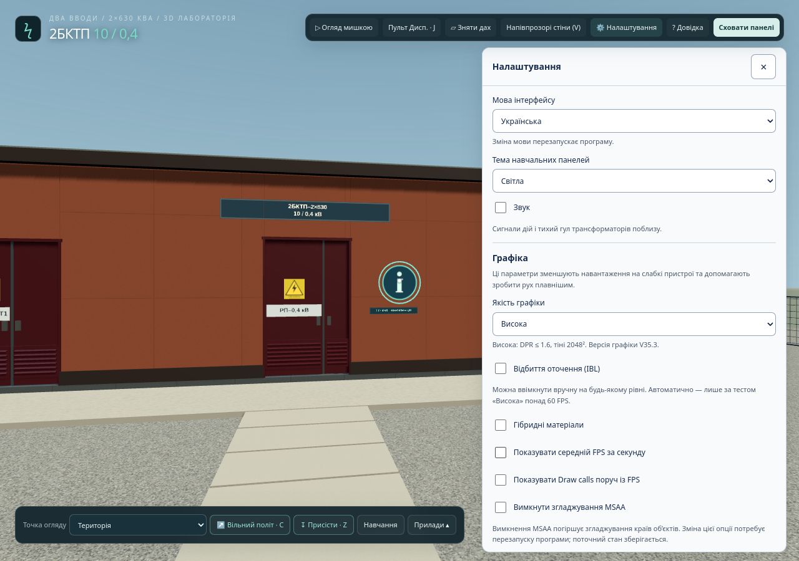
Обладнання підстанції
У моделі представлено два вводи 10 кВ, дві секції шин 10 кВ, два трансформатори по 630 кВА, дві секції 0,4 кВ та десять відхідних ліній. Трансформатори мають групу з’єднання Dyn11; у моделі задано глухозаземлену нейтраль і систему НН TN-S.
2.1. Основні зв’язки
Кожен ввід 10 кВ через свої апарати живить відповідну секцію шин. Від неї через апарати трансформаторного приєднання живиться Т1 або Т2. Низька сторона трансформатора підключена через ввідний апарат до своєї секції 0,4 кВ.
Секції 10 кВ з’єднуються через секційний вимикач і роз’єднувачі секційного зв’язку. Секції 0,4 кВ мають окремий секційний автомат. У нормальному режимі секційні вимикачі розімкнені. Наявність секційного зв’язку не означає, що будь-яке його ввімкнення дозволено: програма перевіряє поточну конфігурацію й блокування.
| Група | Склад і призначення |
|---|---|
| Комірки 10 кВ | Два вводи, два трансформаторні приєднання, секційний вимикач СВ і секційний роз’єднувач СР. Доступні вимикачі, роз’єднувачі, заземлення, двері й засоби контролю відповідно до виду комірки. |
| Т1 / Т2 | Перетворення 10 кВ у 0,4 кВ. У сцені доступні огляд трансформаторних камер, табличок та індикації. |
| РП–0,4 кВ | Ввідні й секційний автомати, засоби АВР, вимірювання та відхідні лінії. Перші п’ять ліній віднесено до секції I, решту — до секції II. |
| ТТ і ТН | Кола вимірювання, обліку та захисту. Передбачено ТН вводів і шинних секцій, а також окреме керування вузлами ТН. |
| РЗА й АВР | Термінали захисту та автоматика резервування 10 і 0,4 кВ. Індикація й дозволи залежать від стану моделі. |
| ШОТ | Шафа оперативного живлення 110 В DC із випрямлячем та акумуляторною батареєю; живить відповідні кола керування й термінали. |
| Облік та АСКОЕ | Лічильники GAMA 300, аналізатори PM5110, відображення енергії та вузол обміну даними. |
Розміщення основних груп обладнання показано на рис. 4. Однолінійна схема підстанції відображена на рис. 6
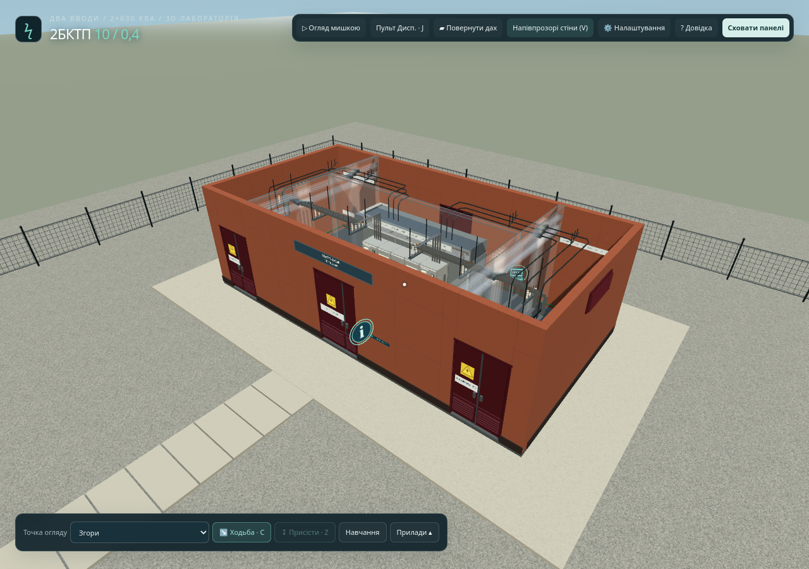
2.2. Як визначити потрібний апарат
Зіставляйте назву приєднання, табличку шафи, підказку при наведенні та позначення на схемі. Для однолінійного креслення передбачено варіанти DSTU і GOST. Статичні схеми на дверцятах комірок використовують позначення ГОСТ і не є живою індикацією положень.
Короткі відповідності наведено в пам’ятці. Вибір стандарту креслення змінює його подання, а не електричний стан обладнання.
↑ До змістуПанелі, схеми та керування
3.1. Верхня й нижня панелі
| Елемент | Призначення |
|---|---|
| Огляд мишкою | Активує огляд сцени; Esc повертає вільний курсор. |
| Пульт Дисп. | Відкриває або приховує пульт диспетчера. |
| Зняти дах / напівпрозорі стіни | Допомагають оглянути компонування підстанції. |
| Налаштування | Мова, тема панелей, звук і параметри графіки. |
| Довідка | Коротка інформація та перехід до теорії підстанції. |
| Сховати панелі | Звільняє екран для огляду. Повернення — екранною кнопкою або H. |
| Точка огляду | Швидкий перехід до потрібної зони. |
| Вільний політ / звичайний рух; присідання | Зміна способу пересування та висоти огляду. |
| Навчання | Відкриває процедури й завдання. |
| Прилади | Відкриває меню з ORION 3.1. WEGA відкривається натисканням її блока на комірці. |
Назви частини кнопок змінюються разом зі станом функції. Відкриття іншої панелі може приховати попередню або згорнути навчальний плеєр.
3.2. Пульт диспетчера
Відкрийте пульт верхньою кнопкою або клавішею J. Пульт містить поточні показники, стани АВР й оперативного живлення, схему, органи керування вводами та лініями, журнал подій і спеціальні налаштування.
- Знайдіть потрібне приєднання за заголовком.
- Прочитайте показники та поточний стан апарата.
- Натисніть потрібну доступну команду.
- Дочекайтеся підтвердженого положення й перевірте індикацію або журнал. Якщо команда відхилена, прочитайте причину.
Кнопка джерела змінює його наявність у моделі. Профілі джерел задають навчальні відхилення живлення. Аварійні впливи, відмови, параметри захисту та фазові налаштування призначені для моделювання режимів і перевірки реакції автоматики.
Кнопка «Повернути обладнання до нормального режиму роботи» відновлює нормальну конфігурацію моделі. Під час активної навчальної процедури спочатку потрібно її завершити або припинити.
Основні області пульта показано на рис. 5.
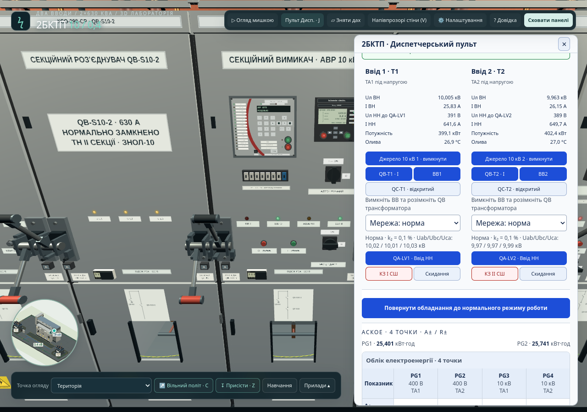
3.3. Оперативна й однолінійна схеми
Натисніть «Відкрити схему» на пульті диспетчера або інтерактивну настінну схему в 3D. У вікні є два окремі подання.
Оперативне подання
Показує підтверджені стани апаратів і поточні вимірювання. Для читання використовуйте позначення та легенду схеми. Параметр «Рух струму» керує анімацією; на нижчих рівнях якості він може бути недоступним. Відсутність анімації сама по собі не є підтвердженням відсутності напруги.
Однолінійна схема
- Перейдіть на вкладку «Однолінійна схема».
- За потреби виберіть DSTU або GOST.
- Для зіставлення з фактичним станом увімкніть «Показати поточний режим роботи». Початкове креслення має вихідні розімкнені контакти й не є поточним станом підстанції.
- Змініть масштаб кнопками − / + або натисніть «До ширини». За збільшення прокручуйте область схеми.
У поданні поточного режиму доступні додаткові параметри оформлення: палітра, тло й анімація. Вони змінюють зображення, а не положення апаратів. Розгорнутий довідковий блок містить джерела й реєстр обладнання.
Друк і збереження схеми
Кнопка «Друк / PDF» відкриває окреме вікно з вибраним видом схеми та діалогом друку браузера. За потреби дозвольте відкриття цього вікна. У друкованій однолінійній схемі не передається екранне накладання поточного режиму: це креслення. Оперативне подання друкується окремим видом.
На вкладці однолінійної схеми є «Завантажити SVG». Файл містить креслення у вибраному стандарті без накладання поточного режиму. Перед використанням друку або SVG перевірте, яке подання вибрано.
Органи керування вікном схем показано на рис. 6.
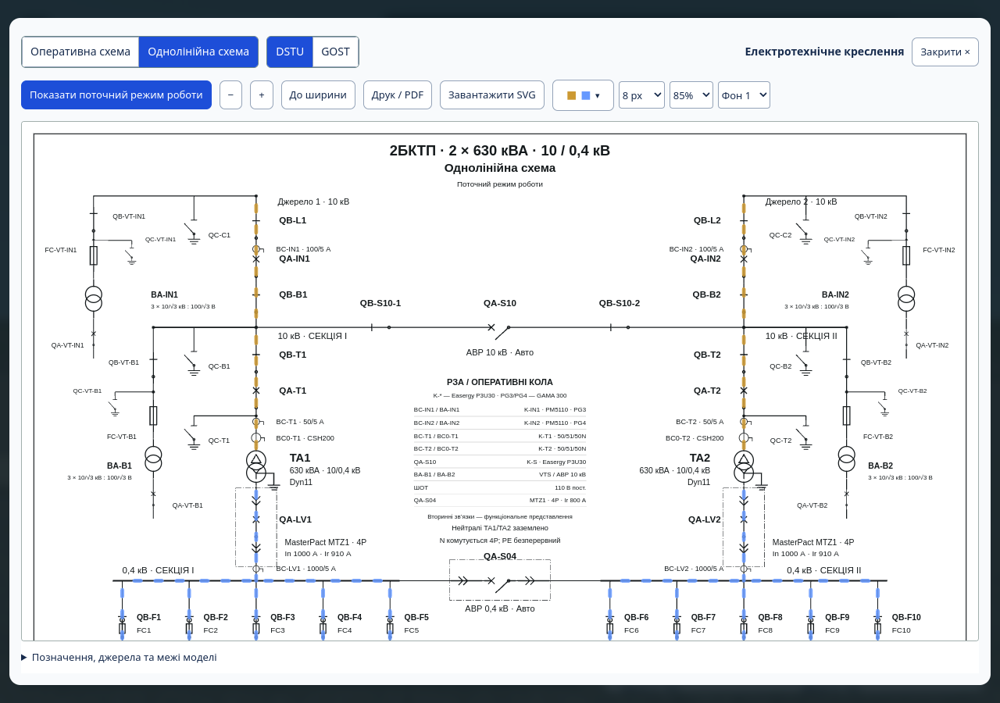
3.4. Комірки й місцеві дії
Підійдіть до фасаду потрібної КСО у звичайному режимі. Наведіть огляд на важіль, кнопку, двері чи прилад і прочитайте підказку. Взаємодія залежить від виду елемента: він може виконувати команду, відкривати панель або показувати інформацію.
Місцева панель КСО містить доступні ручні операції, навчальні підтвердження та стан доступу. Якщо штатне відкриття дверей заблоковано, програма показує причину; слід виконати потрібні умови, а не повторювати натискання. Під час навчальної процедури підтвердження виконуються засобами її плеєра.
У РП–0,4 кВ двері шафи відкриваються натисканням ручки. На шафах відхідних ліній виберіть потрібний ПВР за номером лінії та натисніть його руків’я. На вводах і секційному автоматі доступні кнопки I/O; для ввідних автоматів також передбачено вибір положення викочування. Контролюйте результат за положенням апарата, показниками й повідомленнями програми. Позначення I означає ввімкнене положення, O — вимкнене.
Доступ і перемикання залежать від ізоляції ділянки, положень апаратів, заземлень, дверей, місцевої заборони та чинних перевірок. Точну причину відмови показує програма для поточного стану.
Прийнята команда має змінити підтверджений стан. Натискання кнопки або початок анімації ще не означає завершення операції. Для кроку перевірки напруги потрібен прийнятий результат приладу.
Приклад роботи з коміркою показано на рис. 7.
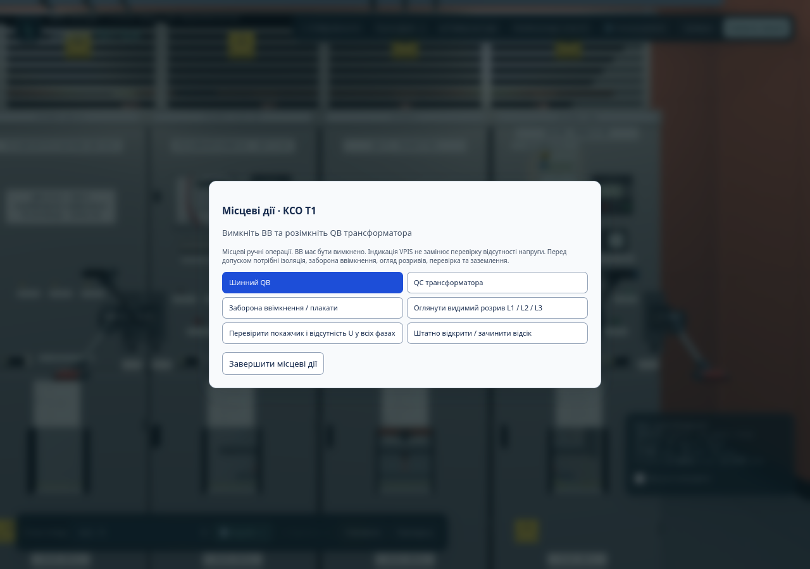
3.5. Довідка, теорія та вузол ТН
Відкрийте «Довідка», потім «Теорія підстанції». Доступні вкладки «Огляд», «Схема», «АВР і захист», «Облік», «Розрахунки», «Ізометрія», «Практикум» і «Джерела». В ізометрії можна змінювати вид компонування. Це довідкові матеріали, окремі від навчального плеєра.
Вузол ТН відкривається кнопкою BA-IN1, BA-IN2, BA-B1 або BA-B2 у блоці «Трансформатори напруги · керування й навчання» пульта диспетчера, а також натисканням відповідного позначення в оперативному поданні схеми. Панель показує первинну та виміряну напруги, вторинну напругу, стан фаз, вставок і контролю кіл ТН. Тут доступні реалізовані дії з первинним роз’єднувачем, вторинним автоматом, перевіркою, заземленням і вставками. Причина відхилення команди відображається в панелі. Навчальні сценарії цього вузла описано в пункті 4.5.
↑ До змістуНавчання
4.1. Панель і початок процедури
Натисніть «Навчання» в нижній панелі. На вкладці «Процедури» можна розгорнути описи п’яти основних процедур; вкладка «Завдання» містить завдання для огляду й самоперевірки.
- Виберіть потрібний вид процедури й натисніть «Пройти процедуру».
- Прочитайте призначення у заголовку плеєра. Конкретний об’єкт призначає програма автоматично: це може бути Т1/Т2, відповідний ввід або одна з десяти відхідних ліній.
- Прочитайте текст поточного кроку та перевірте назву приєднання.
- Виконуйте дії або відповідайте на питання за типом кроку.
Для нового проходження програма готує стан відповідного сценарію. Не орієнтуйтеся лише на конфігурацію, яку бачили до запуску навчання. За наявності збереженого проходження кнопка змінюється на «Продовжити процедуру». Початок іншої процедури або запуск заново потребує врахування попередження про заміну поточного проходження.
Панель вибору процедури показано на рис. 8.
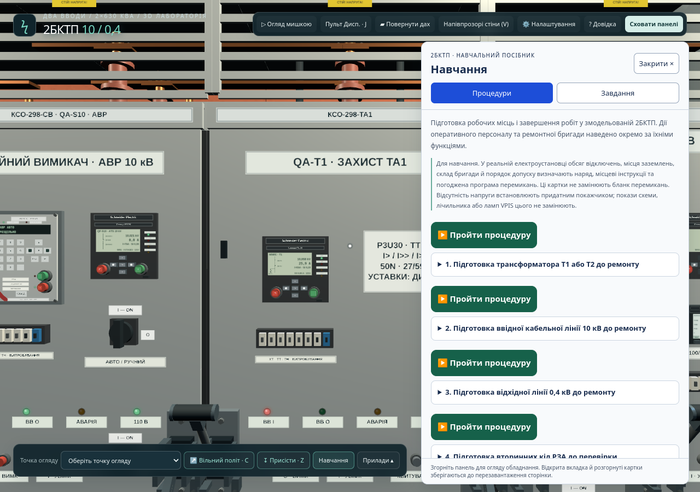
4.2. Як працювати з кроком
| Тип кроку | Дія користувача | Ознака виконання |
|---|---|---|
| Питання | Оберіть відповідь у кожному питанні й натисніть «Перевірити відповіді». | Плеєр підтверджує результат. За помилки прочитайте пояснення й виправте вибір. |
| Дія з обладнанням | Скористайтеся «До шафи» та підказкою, виконайте потрібну операцію на призначеному апараті. | Модель підтвердила потрібне положення або стан. |
| Навчальна відмітка | Прочитайте умову, підійдіть до призначеної КСО, дочекайтеся завершення переходу й натисніть кнопку підтвердження у плеєрі. | Плеєр прийняв відмітку та підтвердив виконання умов моделі. |
| Перевірка приладом | Натисніть «До шафи · Прилади», підготуйте ORION і перевірте потрібні фази WEGA призначеної ділянки. | З’явилося «Крок процедури підтверджено» або відповідне підтвердження плеєра. |
Після прийняття кроку натисніть «Наступний крок». Якщо перехід не дозволено, прочитайте повідомлення плеєра. Для дій із приводом дочекайтеся фактичного підтвердження; для вимірювання недостатньо лише вставити наконечник.
Схема плеєра має режими «Фрагмент» і «Уся схема», засоби масштабу та прокручування. Підсвічування й маркер допомагають знайти потрібний елемент. Пункт початкової процедури можна розгорнути для додаткового пояснення.
Відповідь на питання, навчальна відмітка й фактичне перемикання — різні способи виконання кроку. Не підміняйте потрібну дію довільною командою пульта: під час процедури доступні лише передбачені для поточного етапу операції.
Елементи навчального кроку показано на рис. 9.
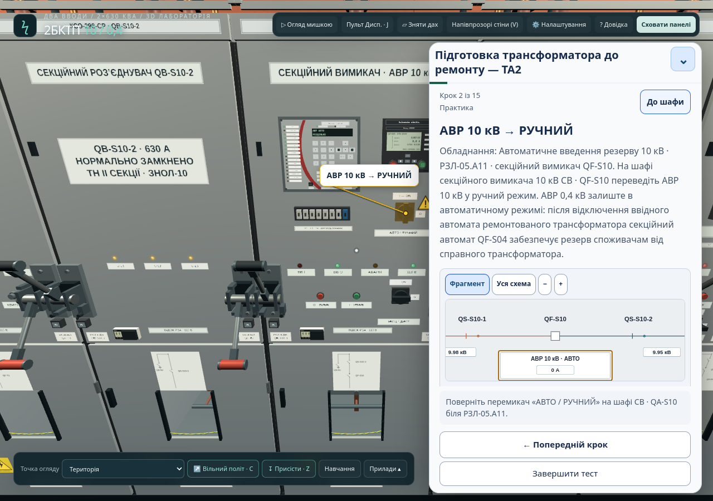
4.3. Повернення, продовження та завершення
- «Попередній крок» відновлює збережений стан попереднього кроку. Це не лише перегортання тексту; пов’язані дії доведеться виконати повторно.
- Згортання плеєра звільняє екран і зберігає поточне проходження. Поверніться через доступну кнопку навчання.
- Після перезавантаження можна продовжити збережену процедуру, якщо браузер зберіг її дані. З’єднання ORION та незавершені вимірювання не відновлюються; потрібний крок може вимагати повторної перевірки.
- «Завершити тест» означає дострокове припинення. Програма попереджає про втрату поточного проходження. Для продовження оберіть «Продовжити тест» у діалозі.
- «Пройти ще раз» або «Заново» запускає нове проходження; призначений об’єкт може змінитися.
Якщо під час процедури змінився стан обладнання, після її завершення або припинення на панелі «Навчання» з’являється блок «Режим роботи після навчання». У ньому можна повернути обладнання до стану перед навчанням, повернути нормальний режим або залишити поточний режим. Після успішного проходження поверніться до панелі «Навчання», щоб зробити цей вибір.
Збереження проходження залежить від сховища браузера. Інший браузер, інший пристрій або очищення даних не гарантують наявності попередньої процедури. Якщо програма повідомляє про неможливість збереження, врахуйте це до закриття сторінки.
4.4. Основні процедури
Нижче наведено орієнтири. Конкретні команди, умови й порядок визначає поточний крок плеєра.
Підготовка трансформатора до ремонту
Мета: пройти підготовку призначеного Т1 або Т2. Основні етапи охоплюють організаційні питання, керування потрібними апаратами 10 і 0,4 кВ, ізоляцію, перевірки, заземлення та доступ до відсіку. Звертайте увагу на режим АВР: виконуйте саме вказівку поточного сценарію, а не загальне вимкнення всієї автоматики.
Підготовка ввідної кабельної лінії 10 кВ до ремонту
Мета: підготувати призначений ввід. Плеєр веде між пультом, апаратами вводу, місцевими підтвердженнями й перевіркою приладом. Звіряйте номер вводу та контрольовану точку: вимірювання іншої комірки не виконує завдання.
Підготовка відхідної лінії 0,4 кВ до ремонту
Мета: пройти підготовку однієї з десяти ліній. Знайдіть призначену лінію й відповідний апарат. Частина етапів реалізована питаннями; не шукайте в сцені фізичні дії, які поточний крок пропонує розглянути як навчальне питання.
Підготовка вторинних кіл РЗА до перевірки
Мета: пройти підготовку кіл відповідного приєднання. Процедура поєднує питання про кола ТТ/ТН і перевірку захисту з реалізованими діями щодо апарата й оперативного живлення. Вона не відтворює повноцінний випробувальний комплекс РЗА.
Завершення ремонту та введення приєднання в роботу
Мета: пройти відновлення приєднання з підготовленого ремонтного стану. Основні етапи — приймання, підтвердження готовності, виконання передбачених перемикань і повернення автоматики. Це окремий сценарій; попереднє проходження підготовки до ремонту для його запуску не потрібне.
Вкладка «Завдання»
Містить завдання простежити шлях електроенергії, розрізнити ТТ і ТН, порівняти вимірювання та облік, відрізнити РЗА/АВР/оперативне живлення й розпізнати N, PE та апарати заземлення. Це матеріали для самоперевірки, окремі від п’яти процедур. Використовуйте наведені орієнтири й оглядайте відповідне обладнання.
4.5. Окреме навчання для шинного ТН
Відкрийте вузол ТН кнопкою у пульті диспетчера або через його позначення в оперативному поданні схеми. У його панелі є блок «Навчання: шинний ТН» з трьома сценаріями:
| Сценарій | Призначення |
|---|---|
| Контроль кіл ТН | Показати сигналізацію втрати вимірювання та блокування АВР за несправності вимірювального кола. |
| Заміна вставок ТН | Ознайомити з реалізованою послідовністю дій у вузлі ТН. |
| Хибний пуск АВР: відмова контролю | Продемонструвати наслідки заданої відмови контролю вимірювальних кіл. |
Після запуску перевірте назву вузла в заголовку: сценарій працює із шинним ТН відповідної секції. Для дії натискайте «Виконати крок»; для підтвердження огляду — «Перевірено · далі». На етапі очікування кнопка недоступна, доки модель не підтвердить потрібний стан.
Після виконання або для дострокового виходу натисніть «Завершити навчання й відновити попередній стан». Закриття панелі під час цього навчання також завершує його з відновленням стану. Перед запуском завершіть активну основну процедуру.
↑ До змістуПрилади
У меню «Прилади» нижньої панелі вибирається переносний ORION 3.1. Стаціонарні WEGA 1 розміщені на фасадах комірок. Лічильники, аналізатори, термінали й інші індикатори доступні безпосередньо на обладнанні.
5.1. WEGA 1
WEGA 1 — стаціонарний блок індикації з фазами L1–L3, захисною кришкою, вимірювальними гніздами та перевіркою дисплея. Натисніть блок на фасаді КСО, щоб відкрити його збільшене зображення, і перевірте назву комірки в заголовку.
Поки відкрите збільшене зображення WEGA, пересування призупинено. Щоб підійти ближче або змінити місце, закрийте його кнопкою ×, перемістіться та знову натисніть потрібну WEGA.
| Місце встановлення | Контрольована точка в моделі |
|---|---|
| Ввід 1 / Ввід 2 | Лінійна сторона ввідного кабелю. |
| Т1 / Т2 | Кабель трансформаторного приєднання після роз’єднувача й вимикача. |
| СВ | Шини секції I 10 кВ. |
| СР | Шини секції II 10 кВ. |
На LCD символ блискавки біля фази відповідає індикації робочої напруги. Додаткова крапка відображає підтвердження вимірювального інтерфейсу в моделі. Відсутність символів сама по собі не підтверджує справність датчика або відсутність напруги на робочій ділянці.
«Перевірка дисплея» короткочасно показує тестові символи всіх фаз. Вона не замінює самотест ORION і не підтверджує справність усього вимірювального тракту. Кнопка «Відкрити / закрити кришку» змінює доступ до гнізд. Перед закриванням кришки від’єднайте від цієї WEGA обидва наконечники.
Елементи WEGA 1 показано на рис. 10.
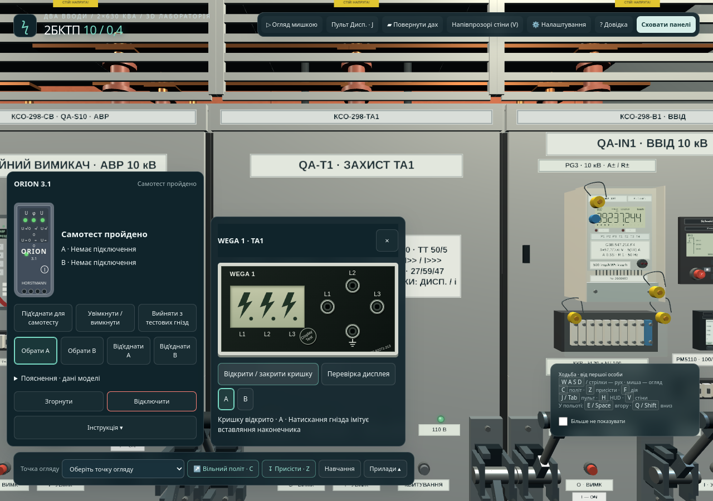
5.2. ORION 3.1 — підготовка
- Натисніть «Прилади» → «ORION 3.1». У відповідному навчальному кроці можна скористатися кнопкою «До шафи · Прилади».
- Натисніть «Під’єднати для самотесту».
- Натисніть «Увімкнути / вимкнути» та дочекайтеся повідомлення «Самотест пройдено».
- Натисніть «Вийняти з тестових гнізд». Самотест із наконечниками у власних гніздах ще не є вимірюванням на WEGA.
Якщо успішний самотест уже виконано й ORION увімкнений, повторно натискати «Увімкнути / вимкнути» не потрібно: це вимкне прилад. Якщо наконечники ще у власних тестових гніздах, натисніть лише «Вийняти з тестових гнізд» й переходьте до вимірювання.
Якщо повідомлено про невдалий самотест, не переходьте до вимірювань. Прочитайте повідомлення приладу та перевірте, чи не задано його несправність. Вбудована інструкція відкривається кнопкою «Інструкція» на панелі ORION.
На вузькому екрані після успішного самотесту й виймання наконечників із тестових гнізд панель може автоматично згорнутися. Натисніть WEGA потрібної комірки; результат ORION залишається в компактному ярлику.
Підготовку ORION до вимірювань показано на рис. 11.
5.3. Перевірка індикації напруги у фазах
Для роботи з гніздами потрібні звичайний режим огляду, вимкнені напівпрозорі стіни, фізична близькість до потрібної WEGA, відкрита кришка й підготовлений ORION. Довжина кожного проводу — 1,5 м.
- Оберіть «Обрати A» на панелі ORION.
- Підійдіть до потрібної комірки й натисніть її WEGA. Звірте заголовок із завданням.
- Відкрийте кришку.
- Натисніть гніздо L1. Після прийнятого підключення з’явиться наконечник A.
- Прочитайте результат, назву комірки та фазу на панелі ORION або в компактному рядку.
- У тій самій панелі натисніть L2, прочитайте результат, потім повторіть для L3. Канал A переноситься між гніздами; окремо від’єднувати його перед кожною фазою не потрібно.
З’єднання із земляним контактом виконується разом із вимірювальним наконечником. Окремо натискати символ землі не потрібно. За відхиленої команди штекер не з’являється: прочитайте причину й виправте умови.
| Повідомлення | Як читати |
|---|---|
| Напруга наявна | На підключеній фазі індикується робоча напруга. |
| Робоча напруга не індикується | Показ для поточної точки; сам по собі не виконує всіх умов підтвердження робочої ділянки. |
| Напруга наявна · інтерфейс не підтверджений | Результат не слід трактувати як успішну перевірку відсутності напруги. |
| Немає підключення | Перевірте канал, гніздо та досяжність проводу. |
У навчальному кроці перевірки відсутності напруги потрібні придатні результати всіх трьох фаз саме призначеної робочої ділянки. Стежте за лічильником 1/3 → 2/3 → 3/3 та дочекайтеся «Крок процедури підтверджено». За наявної напруги або непридатного сигналу відповідна фаза до цього лічильника не зараховується. Сам штекер або порожній LCD крок не завершують.
Приклад підключення й читання результату показано на рис. 12.
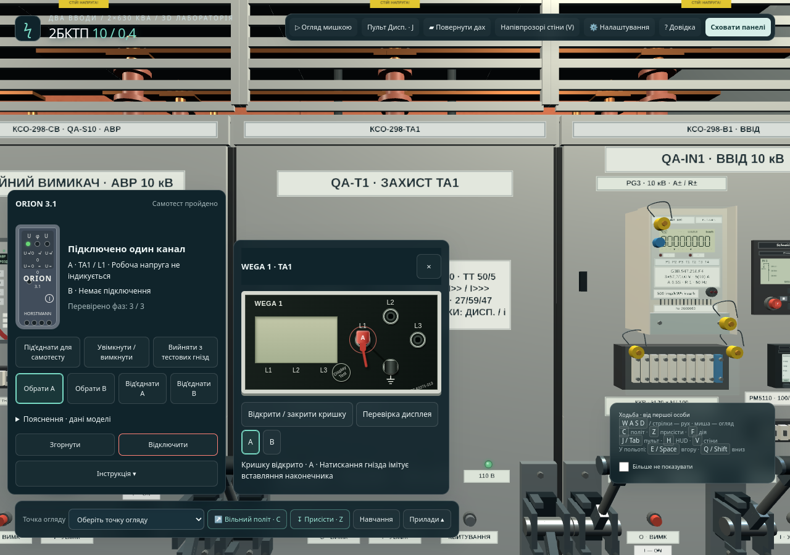
5.4. Два канали та порівняння фаз
У вільній роботі для двоканального порівняння підготуйте прилад, оберіть канал A та підключіть першу точку. Потім оберіть B і підключіть другу доступну точку. Обидві точки мають залишатися в межах досяжності відповідних проводів; гніздо, зайняте іншим наконечником, не приймає другий. Під час навчальної процедури діють обмеження її поточного кроку.
ORION показує результат поточної пари: «збіг фаз», «фази не збігаються», «граничний кут» або неможливість фазування за поточними сигналами. Для інших пар змінюйте вибраний канал і його точку підключення.
Поза активною навчальною процедурою доступний блок «Пояснення · дані моделі». Наведений у ньому числовий кут є навчальними даними симулятора, а не цифровим показом фізичного ORION. Попередні результати не слід приймати за нове вимірювання після зміни електричного стану. Три порівняні пари не є дозволом на паралельне ввімкнення джерел.
5.5. Згортання, відключення та відновлення
| Дія | Результат |
|---|---|
| Закрити збільшену WEGA кнопкою × | Закривається збільшений вигляд; це не повне відключення ORION. |
| Згорнути ORION | Панелі ховаються, з’єднання залишаються. Натисніть компактний ярлик ORION, щоб знову розгорнути панель. |
| Від’єднати A / B | Від’єднується обраний канал. |
| Відключити | Наконечники від’єднуються, панель ховається, незавершений набір вимірювань скидається. |
| Відійти за досяжність проводу | Відповідний канал від’єднується автоматично; з’являється повідомлення. |
| Близько двох хвилин без зміни стану підключень або індикації каналів | ORION автоматично вимикається. Для продовження знову виконайте самотест; незавершений набір перевірок потрібно повторити. |
| Відновити навчальну процедуру | Фізичні підключення й незавершений набір перевірок скидаються; дотримуйтеся повідомлення про повторне вимірювання. |
Після прийняття кроку звичайне відключення ORION саме по собі не скасовує вже прийнятий результат. Зміна схеми живлення, фазових параметрів або стану вимірювального кола може його скасувати. Після вимірювання орієнтуйтеся на підтвердження плеєра. Якщо потрібно закрити кришку WEGA, спочатку натисніть «Від’єднати A» і «Від’єднати B», потім закрийте кришку. Завершіть роботу кнопкою «Відключити» та перейдіть до наступного кроку в плеєрі.
На широкому екрані панелі приладів можна пересувати за заголовки в доступній області. На вузькому екрані перемикайте картки й прокручуйте їхній вміст. Зміна розміру вікна перераховує розміщення.
5.6. Інші прилади та індикатори — коротко
Основні можливості приладів у симуляторі:
| Прилад / пристрій | Що доступно у REM |
|---|---|
| PowerLogic PM5110 | На фасадах відповідних приєднань показує електричні величини моделі. Доступні сторінки показників, які перемикаються клавішами під дисплеєм. |
| GAMA 300 | Відображає код регістру, значення енергії A±/R± та індикатори. Натискання органу прокручування змінює регістр; імпульсна індикація пов’язана з обліком енергії. |
| Easergy P3U30 | Показує реалізовані сторінки вимірювань і станів, сигналізацію захисту та оперативного живлення. Доступні навігаційні клавіші й реалізовані команди термінала. |
| РЕЛСіС РЗЛ-05.А11 | Показує стан АВР 10 кВ, дозволи, блокування й сигнали. Реалізовано сторінки дисплея, команди секційного вимикача та скидання відповідного стану АВР. |
| Zelio Logic | Відображає навчальну програму АВР 0,4 кВ. Доступні реалізовані сторінки й кнопки; перемикач режиму біля нього задає «АВТО / РУЧНИЙ». |
| MasterPacT MTZ1 | Доступні кнопки I/O, індикація положення й готовності приводу та заряджання. Для ввідних автоматів передбачено положення «Робоче», «Тестове», «Від’єднано» з перевіркою умов моделі. |
| Інші індикатори | Аналогові прилади, температура, показники та сигналізація оперативного живлення відображають стан моделі. Для доступного елемента наведення або натискання показує передбачену інформацію. |
Типові труднощі
| Ситуація | Що перевірити або зробити |
|---|---|
| Не вдається натиснути панель: миша повертає огляд | Натисніть Esc. Якщо спочатку закрилося активне вікно, повторіть для виходу з огляду. |
| Зникли кнопки та панелі | Натисніть H або екранну кнопку показу панелей. |
| Клавіші не рухають користувача | Закрийте активний діалог або панель, вийдіть із поля введення й активуйте огляд сцени. |
| Не видно мінікарти | Поверніться зі стану польоту або закрийте панель, що тимчасово приховує карту. |
| Апарат не перемикається або двері не відчиняються | Прочитайте причину відмови, перевірте призначення апарата, режим керування й поточні умови доступу. Дочекайтеся завершення попередньої команди. |
| Кнопка навчального підтвердження не приймає дію | Підійдіть до призначеної КСО, дочекайтеся завершення переходу та прочитайте повідомлення плеєра. |
| Крок не завершується | Звірте тип кроку: питання, відмітка, дія або вимірювання. Виконайте потрібну дію саме на призначеному об’єкті та прочитайте повідомлення плеєра. |
| Після «Попередній крок» змінився стан обладнання | Плеєр відновив збережений стан цього кроку. Виконайте потрібні дії повторно. |
| ORION не підключається | Перевірте самотест, виймання наконечників із тестових гнізд, канал, кришку, вільне гніздо, звичайний режим, непрозорі стіни та відстань до WEGA. Для наближення закрийте збільшену WEGA кнопкою ×. |
| Результат трьох фаз не зараховано | Перевірте комірку, усі три фази та придатність сигналів. За повідомленням моделі усуньте перешкоду й повторіть перевірку. |
| WEGA не дає закрити кришку | Від’єднайте від цієї WEGA канали A і B, потім повторіть дію. |
| ORION вимкнувся під час роботи | За тривалого незмінного стану каналів діє автоматичне вимкнення. Повторіть самотест і незавершені вимірювання. |
| Штекер зник під час руху | Перевищено досяжність проводу. Підійдіть до фасаду й повторіть підключення. |
| Після перезавантаження потрібно повторити вимірювання | Це передбачене відновлення приладового кроку. Знову підготуйте прилад і виконайте потрібні перевірки. |
| Рух недостатньо плавний | Знизьте якість графіки, спробуйте гібридні матеріали, перевірте FPS. IBL можна залишити вимкненим. |
| Не відкривається друк схеми | Дозвольте браузеру відкрити вікно друку для сторінки симулятора й повторіть команду. |
| Креслення не збігається з положенням апаратів | На вкладці однолінійної схеми ввімкніть «Показати поточний режим роботи» або перейдіть до оперативного подання. |
Позначення й основні дії
Огляд: миша · рух: WASD / стрілки · дія: F / ліва кнопка · вільний курсор: Esc · політ: C · присідання: Z · пульт: J · панелі: H.
Відповідності позначень креслення
Це приклади чинного перемикання DSTU/GOST у симуляторі. Латинські літери й номер приєднання зберігаються відповідно до показаного позначення.
| DSTU | GOST | Елемент |
|---|---|---|
| QA-IN1 | QF-IN1 | Вимикач вводу 1 |
| QB-T1 | QS-T1 | Роз’єднувач трансформаторного приєднання 1 |
| QC-T1 | QN-T1 | Заземлювальний апарат трансформаторного приєднання 1 |
| QA-S10 / QA-S04 | QF-S10 / QF-S04 | Секційні вимикачі 10 / 0,4 кВ |
| TA1 | T1 | Силовий трансформатор 1 |
| BA-IN1 | TV-IN1 | ТН вводу 1 |
| QB-F1 / FC1 | QS-F1 / FU1 | Апарат і запобіжник відхідної лінії 1 |
Скорочення
РП — розподільний пристрій; КСО — камера збірна однобічного обслуговування; ВВ — вакуумний вимикач; ПВР — запобіжник-вимикач-роз’єднувач; ТТ / ТН — трансформатор струму / напруги; РЗА — релейний захист та автоматика; АВР — автоматичне введення резерву; ШОТ — шафа оперативного струму; АСКОЕ — автоматизована система комерційного обліку електроенергії; VTS — контроль справності кіл напруги; LRM — вимірювальний інтерфейс блока WEGA.
↑ До змісту